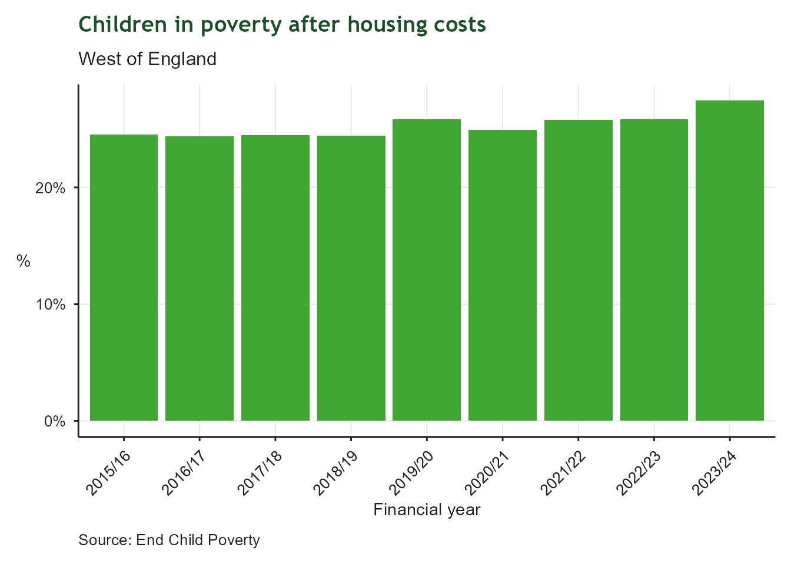
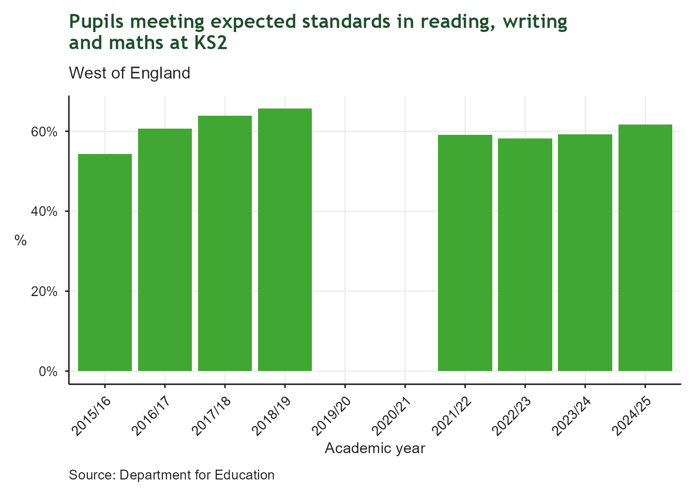
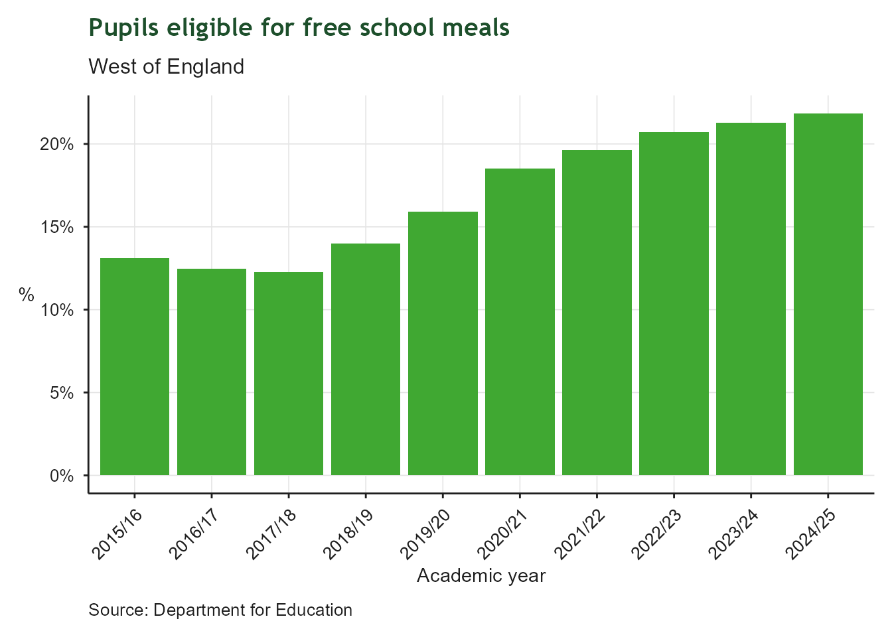
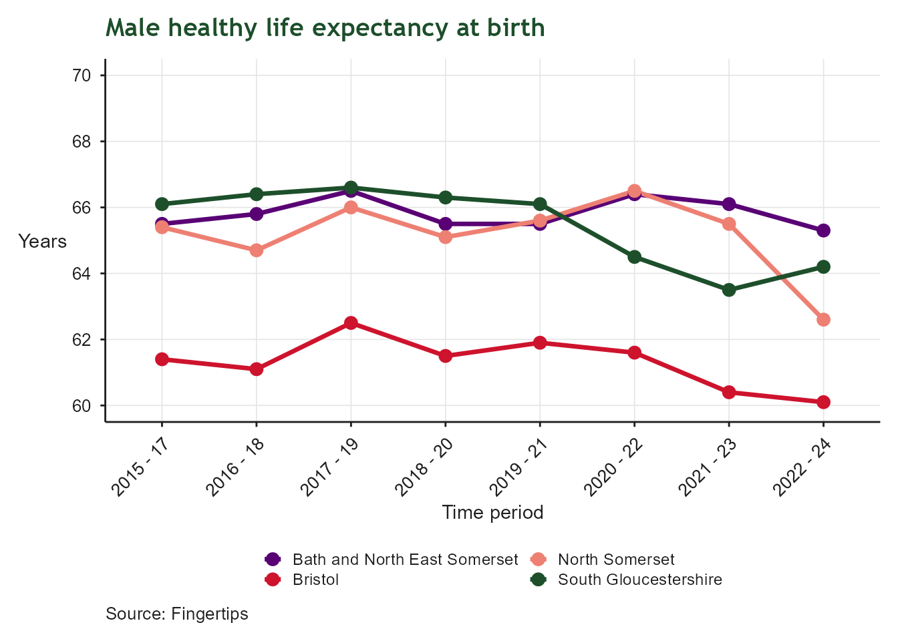
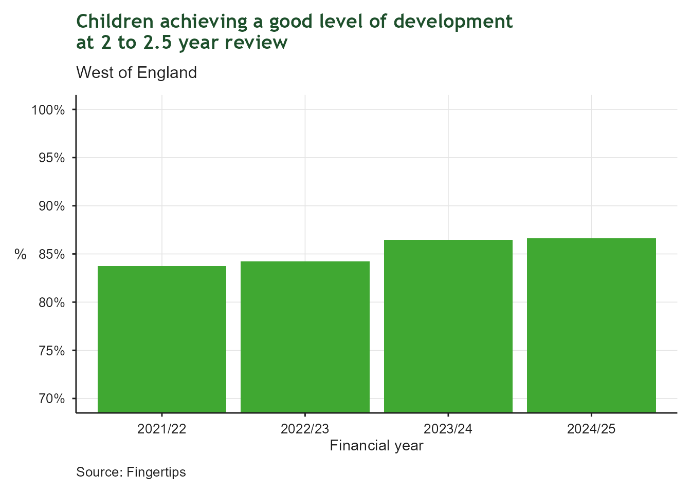

| Child Poverty: Indicator Summary | ||||
| Indicator | From | To | Latest value | Units |
|---|---|---|---|---|
| Children in low income families | 2023-04-01 | 2024-03-31 | 27 | % |
| Proportion of childcare places relative to population of age groups 0-4 | 2025-01-01 | 2026-12-31 | 50 | % |
| Proportion of early years settings judged good or outstanding | 2025-01-01 | 2026-12-31 | 98 | % |
| Children achieving good level of development at 2-2.5 year review | 2024-04-01 | 2025-03-31 | 87 | % |
| Proportion of children with a good level of development up to 5 years old | 2024-09-01 | 2025-08-31 | 72 | % |
| Proportion of pupils eligible for free school meals | 2024-09-01 | 2025-08-31 | 22 | % |
| Proportion of school pupils with social, emotional and mental health needs | 2024-09-01 | 2025-08-31 | 5 | % |
| Educational attainment of children | 2024-09-01 | 2025-08-31 | 62 | % |
6 Child Poverty
Lifting children and families out of poverty in the West of England
6.1 Context
This indicator summary tracks indicators related to child poverty, early years development, educational outcomes, health and wellbeing across the West of England. Together these indicators provide insight into the factors that influence children’s life chances and help monitor progress towards the West of England Growth Strategy’s ambition to lift children and families out of poverty. The indicators cover measures of income, education, childcare, health and wellbeing, helping to understand whether all children have the opportunity to thrive regardless of their background.
All indicators in this section relate to the wider West of England geography, which includes Bath and North East Somerset, Bristol, North Somerset and South Gloucestershire. This geography extends beyond the West of England Combined Authority area to include North Somerset.
6.2 Child Poverty
| Child Poverty | |
| Children living in low-income families after housing costs | |
| Latest value | 27% (2024-03-31) |
| Previous value | 26% (2023-03-31) |
| Change vs previous | ↑ +1.6 ppt |
| First value | 25% (2016-03-31) |
| Change since first | ↑ +2.9 ppt |
| Observations | 9 |
| Trend | |
| Last updated | 2026-08-03 |
Overview
Child poverty can have lasting impacts on children’s health, educational attainment and future employment opportunities. This indicator measures the proportion of children living in households with incomes below 60% of the national median after housing costs have been taken into account. Higher levels indicate that more children are growing up in financial hardship, which can affect outcomes throughout their lives. Monitoring child poverty helps assess progress towards reducing inequalities and ensuring that all children and families can benefit from economic growth.

6.3 Children Achieving a Good Level of Development
| Good Level of Development by Age 5 | |
| Children achieving a good level of development | |
| Latest value | 72% (2025-08-31) |
| Previous value | 71% (2024-08-31) |
| Change vs previous | ↑ +1.2 ppt |
| First value | 68% (2022-08-31) |
| Change since first | ↑ +3.7 ppt |
| Observations | 4 |
| Trend | |
| Last updated | 2026-08-03 |
Overview
Early childhood development plays a crucial role in shaping future educational attainment, health and wellbeing. This indicator measures the proportion of children achieving a good level of development by the end of the Early Years Foundation Stage, typically at age five. A good level of development reflects children’s progress across key areas of learning and development, including communication, physical development, literacy and mathematics.
![Line chart comparing the percentage of children achieving a good level of development by age five across Bath and North East Somerset, Bristol, North Somerset, South Gloucestershire and the West of England, from 2015/16 onward. The x-axis shows academic year; the y-axis shows percentage, with each local authority shown in a different colour. The West of England average has improved in recent years, rising from around 68% in 2021/22 to almost 72% in 2024/25, with local authorities following a similar upward pattern.](index_files/figure-html/RI_6A2_child_development_u5_plot-1.png)
6.4 KS2 Expected Standards
| KS2 Expected Standards | |
| Pupils meeting expected standards in reading, writing and maths | |
| Latest value | 62% (2025-08-31) |
| Previous value | 59% (2024-08-31) |
| Change vs previous | ↑ +2.5 ppt |
| First value | 54% (2016-08-31) |
| Change since first | ↑ +7.4 ppt |
| Observations | 10 |
| Trend | |
| Last updated | 2026-08-03 |
Overview
Educational attainment during primary school is an important predictor of future educational outcomes. This indicator measures the proportion of pupils meeting expected standards in reading, writing and mathematics at Key Stage 2. Higher attainment levels indicate that more children are developing the knowledge and skills needed for successful progression through education. When interpreting trends over time, it is important to note that data are not available for 2020 and 2021, as Key Stage 2 assessments were cancelled in response to the COVID-19 pandemic.

6.5 Free School Meals Eligibility
| Free School Meals Eligibility | |
| Pupils eligible for free school meals | |
| Latest value | 22% (2025-08-31) |
| Previous value | 21% (2024-08-31) |
| Change vs previous | ↑ +0.6 ppt |
| First value | 13% (2016-08-31) |
| Change since first | ↑ +8.7 ppt |
| Observations | 10 |
| Trend | |
| Last updated | 2026-08-03 |
Overview
Eligibility for free school meals is widely used as a proxy measure of socioeconomic disadvantage among children and young people. This indicator measures the proportion of pupils known to be eligible for and claiming free school meals. Higher levels may indicate greater levels of financial hardship among families and can help identify communities where additional support may be required. Monitoring this measure provides insight into the scale and distribution of disadvantage across the region.

6.6 Childcare Places
| Childcare Places | |
| Childcare places relative to the population aged 0-4 | |
| Latest value | 50% (2026-12-31) |
| Previous value | 49% (2025-12-31) |
| Change vs previous | ↑ +0.9 ppt |
| First value | 45% (2021-12-31) |
| Change since first | ↑ +4.9 ppt |
| Observations | 6 |
| Trend | |
| Last updated | 2026-08-03 |
Overview
Access to childcare supports children’s development while enabling parents and carers to participate in employment and training. This indicator measures the number of childcare places relative to the population of children aged 0-4. Higher levels indicate greater childcare availability and capacity across the region.

6.7 Early Years Settings Rated Good or Outstanding
| Early Years Settings Rated Good or Outstanding | |
| Early years settings judged good or outstanding | |
| Latest value | 98% (2026-12-31) |
| Previous value | 99% (2025-12-31) |
| Change vs previous | ↓ -0.8 ppt |
| First value | 97% (2021-12-31) |
| Change since first | ↑ +1.3 ppt |
| Observations | 6 |
| Trend | |
| Last updated | 2026-08-03 |
Overview
The quality of early years provision plays a significant role in children’s development and readiness for school. This indicator measures the proportion of early years settings rated good or outstanding.
![Line chart comparing the percentage of early years settings rated good or outstanding across Bath and North East Somerset, Bristol, North Somerset, South Gloucestershire and the West of England, each August from 2020 to 2025. The x-axis shows date; the y-axis shows percentage, with each local authority shown in a different colour. Quality ratings remain consistently high across all areas throughout the period, with the West of England average staying between around 96% and 99%, showing little change over time.](index_files/figure-html/RI_6B2_early_years_quality_plot-1.png)
6.8 Quality of Life in Deprived Areas
Please note: This indicator is currently under development and data is not yet available for reporting. Analysis will be included in a future update of the Regional Indicators report.
6.9 Happiness and Life Satisfaction
Please note: This indicator is currently under development and data is not yet available for reporting. Analysis will be included in a future update of the Regional Indicators report.
6.10 Life Expectancy Gap
Overview
Life expectancy gap is a widely used measure of population health and inequality. This indicator measures the gap in life expectancy at birth between residents living in the most deprived and least deprived areas. The size of the gap provides an indication of the extent of health inequalities within the region. A smaller gap suggests that people are experiencing more equal opportunities for a long and healthy life, regardless of where they live. Tracking this measure helps assess progress towards reducing health inequalities and improving outcomes for disadvantaged communities.
![Line chart of the gap in female life expectancy at birth between the most and least deprived areas, for Bath and North East Somerset, Bristol, North Somerset and South Gloucestershire, from 2015 onward. The x-axis shows time period; the y-axis shows the gap in years, on a scale from 0 to 14. The gap differs by local authority, with some areas showing a persistently wider gap than others, indicating uneven progress in reducing health inequalities between women in the most and least deprived neighbourhoods.](index_files/figure-html/RI_6D2_life_expectancy_gap_female_plot-1.png)

6.11 Healthy Life Expectancy at Birth
Overview
Healthy life expectancy is a measure of both the length and quality of life. This indicator estimates the average number of years a person can expect to live in good health from birth, based on current mortality rates and self-reported health status. Higher levels indicate that people are spending more of their lives in good health and experiencing better overall wellbeing. Healthy life expectancy is influenced by a range of social, economic and environmental factors, making it a useful measure for understanding long-term health outcomes and inequalities across the population.


6.12 Child Health: Good Level of Development at 2–2.5 Year Review
| Child Health at 2–2.5 Year Review | |
| Children achieving a good level of development at review | |
| Latest value | 87% (2025-03-31) |
| Previous value | 86% (2024-03-31) |
| Change vs previous | ↑ +0.2 ppt |
| First value | 84% (2022-03-31) |
| Change since first | ↑ +2.9 ppt |
| Observations | 4 |
| Trend | |
| Last updated | 2026-08-03 |
Overview
The 2 to 2½ year review is an important early assessment of children’s development, health and wellbeing. This indicator measures the proportion of children whose development is assessed as being at the expected level across key areas of development at the time of review. Higher levels indicate that more children are developing the skills and capabilities expected for their age, providing a strong foundation for future learning, health and wellbeing. Monitoring this indicator helps identify how well children are progressing in the early years and where additional support may be needed.
